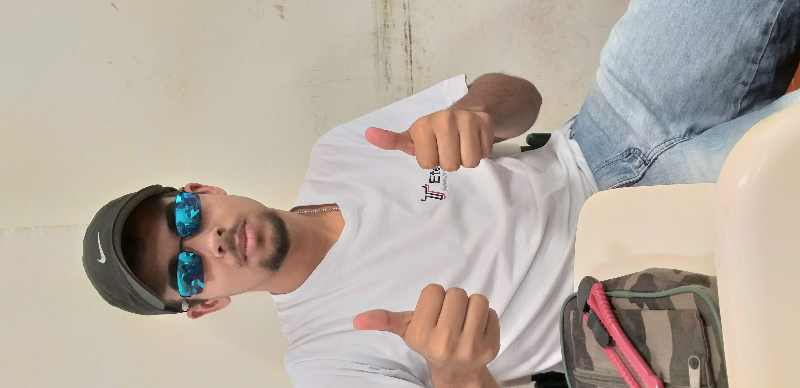
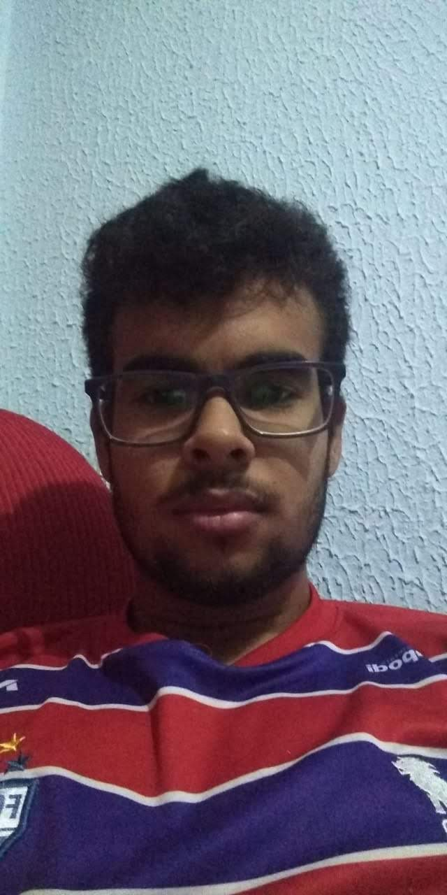

Marco Antonio
vulgo M...Seja muito bem-vindo à pagina do membro Marco, um dos membros iniciais e principais do grupo Canarinho Pistola, responsável por ser o principal líder e pessoa mais responsável do grupo e, ser o principal membro do grupo mais estressado do grupo, porém independente disso, muitos penso que isso é ruim, porém é uma principal característica de Marco.
 Marco é responsável pela liderança do grupo, e da sala, porta-voz oficial do grupo e da sala de aula, em questões de conversação entre os membros das diretorias, e por essa forte skill, também era líder de seu grupo de TCC.
Marco desenvolveu essa característica, pelo fato de ficar com raiva, dos péssimos representantes que a sala teve. Além dessa liderança, Marco é o goleiro oficial do grupo, titular absoluto de sua posição.
"Fazer parte dos Canários foi a melhor coisa que aconteceu, esse grupo é incrível, todos os dias são sempre felizes, e divertidos; Esse grupo é especial, odiado por invejosos na Etec, porém isso não importa pra gente, nos importamos só com nós"
- Marco Antonio Sipriano
- Salto
- Solteiro
- Goleiro
- Automation Control Engineer
Perguntado sobre uma palavra que define o grupo, Marco disse: "Amizade 🧑🤝🧑" - o motivo é porque todos nesse grupo são muitos amigos, todos nos canários são amigáveis, são uma companinha incrível.